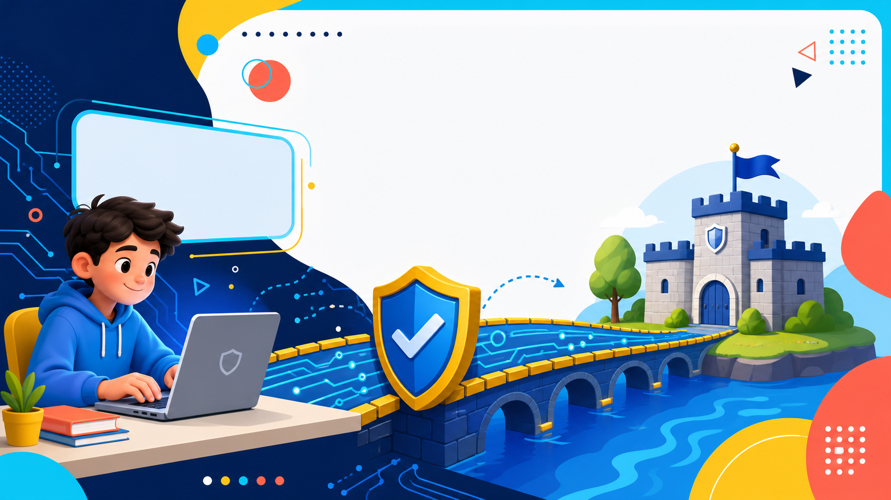
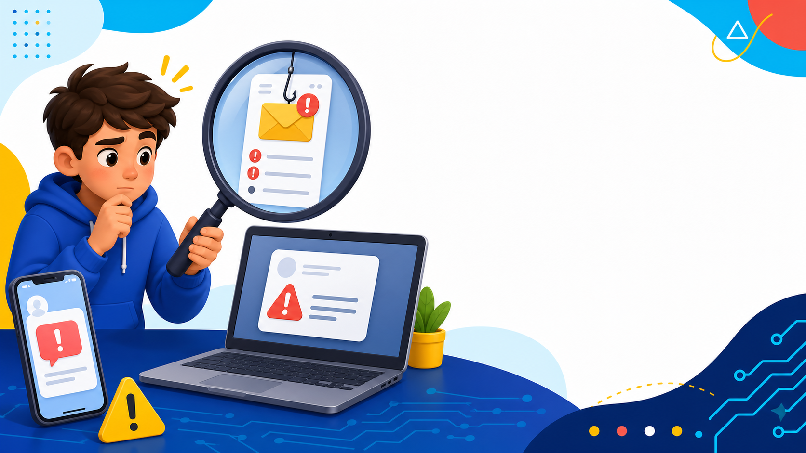
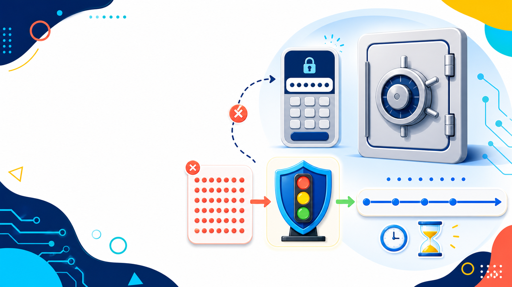
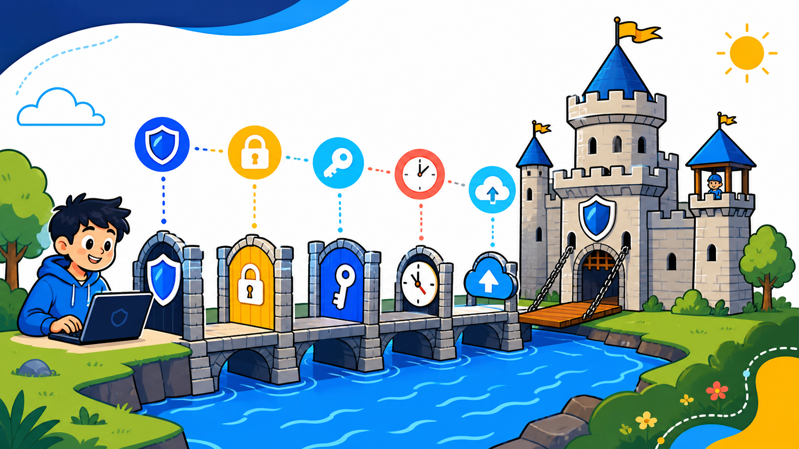
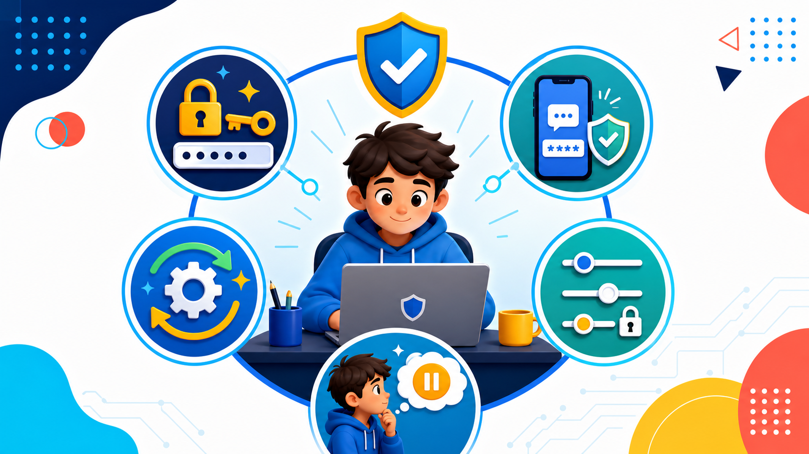
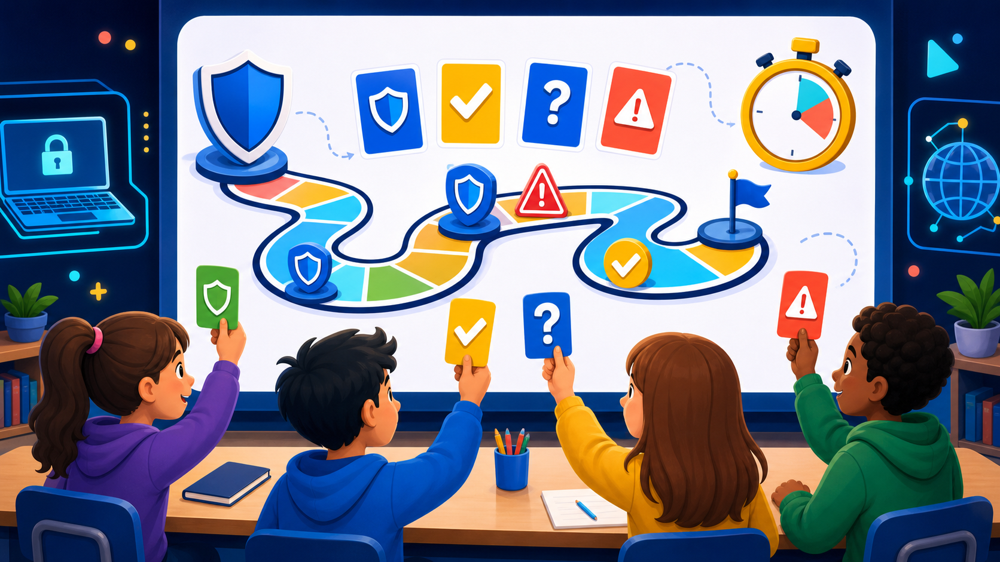
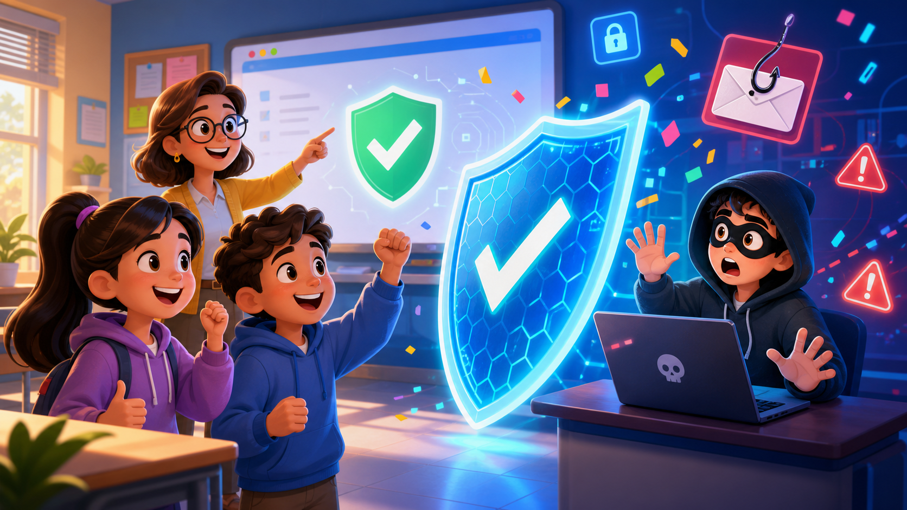

סיפור אמיתי לפתיחה
הרבה מתקפות מתחילות בהודעה שמלחיצה אותנו: פרס, חשבון שעומד להיסגר, או בקשה לקוד. הלחץ הוא הפיתיון.
מקור: FTC45 דקות · כיתות ז׳-ט׳ · הגנה בלבד
שיעור קצר וברור על הודעות חשודות, סיסמאות, התחזות, קבצים מסוכנים, ומה כל אחד מאיתנו יכול לעשות.
הרבה מתקפות מתחילות בהודעה שמלחיצה אותנו: פרס, חשבון שעומד להיסגר, או בקשה לקוד. הלחץ הוא הפיתיון.
מקור: FTC
הרעיון המרכזי
כשמישהו מנסה לפגוע במידע, להיכנס לחשבון בלי רשות, או לגרום לנו ללחוץ ולשתף משהו שלא רצינו.
במקרה אמיתי, שתי חברות אינטרנט גדולות שילמו הרבה כסף בגלל אימיילים וחשבוניות מזויפים. גם מבוגרים וחברות יכולים לטעות.
מקור: DOJכמעט $21B
לפי דוח IC3 של ה-FBI לשנת 2025, אנשים בארה"ב דיווחו על יותר ממיליון מקרי פשיעה באינטרנט ועל הפסדים של כמעט 21 מיליארד דולר.
מקור: FBI IC3 2025סוג 1 מתוך 5
הודעה מלחיצה או מפתה: "אשרו עכשיו", "החשבון ייסגר", "זכיתם".
עוצרים. בודקים מי שלח. לא לוחצים על קישור מוזר. נכנסים דרך האפליקציה או האתר הרשמי.
אנשים פרסמו משהו למכירה. "קונה" ביקש קוד כדי לבדוק שהם אמיתיים. מי שנתן את הקוד עזר לרמאי לפתוח חשבון על שמו.
מקור: FTC

סוג 2 מתוך 5
סיסמה קצרה, מוכרת או חוזרת קלה יותר לניחוש.
בוחרים סיסמה ארוכה, לא משתמשים באותה סיסמה בכל מקום, ומפעילים קוד נוסף כשאפשר.
כלל כיתה: סיסמה טובה היא כמו משפט סודי, לא כמו מילה אחת.
במקרה של 23andMe, החברה אמרה שתוקף כנראה השתמש בסיסמאות שדלפו מאתרים אחרים. לכן לא כדאי למחזר סיסמאות.
מקור: 23andMeנוזקה היא תוכנה שמזיקה למחשב. כופרה יכולה לנעול קבצים. ההגנה שלנו: לא פותחים קובץ חשוד, מעדכנים תוכנות ושומרים גיבוי.
קובץ "מצחיק" או "פרס" מגיע ממישהו לא מוכר.
מי שלח? האם ביקשתי את זה? האם שם הקובץ נראה הגיוני?
שואלים מבוגר, לא פותחים בלחץ, מעדכנים ושומרים גיבוי.
ב-2022 ה-FBI ו-CISA הזהירו שקבוצת כופרה פוגעת בבתי ספר. זה אומר שגם מיילים, קבצים ושיעורים דיגיטליים צריכים הגנה.
מקור: CISAלפעמים לא צריך "האקר". מידע יכול לצאת החוצה כי פרסמנו תמונה, שלחנו לקבוצה הלא נכונה, או אישרנו הרשאות בלי לחשוב.
מפת פעילות של Strava הראתה מסלולי ריצה במקומות רגישים. גם מידע שנראה "רק ספורט" יכול לספר איפה אנחנו נמצאים ומה אנחנו עושים.
מקור: Privacy International"זה אני, החלפתי מספר", "שלח לי קוד", "אל תגיד לאף אחד". התחזות מנצלת אמון.
בקשה דחופה, סודית או מוזרה ממישהו שמוכר לנו.
בודקים בדרך אחרת: שיחה, הורה, מורה או הודעה נפרדת.
"אני בודק לפני שאני שולח קוד או כסף."
ה-FTC מתאר רמאים שמתחזים לחבר או בן משפחה במצב חירום. הם מבקשים כסף או כרטיס מתנה, ולפעמים אומרים: "אל תספרו".
מקור: FTCאנלוגיה לציור על הלוח
הגנה טובה היא לא דבר אחד. היא כמה צעדים קטנים שעוזרים לנו לעצור בזמן.
[תלמיד] ==גשר== [שער 1] [שער 2] [שער 3] ==> [טירה בטוחה]
סיסמה קוד נוסף עצירה לפני קליק גיבוי
בכל הסיפורים שראינו, שכבה אחת לא הספיקה. סיסמה, קוד נוסף, בדיקה ושיחה עם מבוגר נותנים לנו עוד זמן לעצור.

הגנה שפחות מדברים עליה
אם מישהו מנסה לנחש סיסמה שוב ושוב, אתר טוב מאט אותו.
בלי האטה, מחשב מהיר יכול לבדוק הרבה אפשרויות בזמן קצר.
עם המתנה בין ניסיונות, אותו מספר ניסיונות יכול לקחת שנים.
לפעמים תוקפים מנסים הרבה סיסמאות שכבר דלפו. לכן אתרים טובים מוסיפים בלמים: המתנה, נעילה זמנית וקוד נוסף.
מקור: NISTזו דוגמה מתמטית פשוטה. הרעיון: האטה יכולה להפוך ניחוש למשהו שלא משתלם.
מה עושים מחר בבוקר?
אחרי כל סיפור אמיתי חוזרת אותה מסקנה: פעולה קטנה בזמן הנכון יכולה לעצור בעיה גדולה. בוחרים דבר אחד לשפר השבוע.


משחק סיכום
הודעה אומרת: "לחצו עכשיו או שהחשבון ייסגר". מה זה מזכיר?
בחרו תשובה כדי לקבל רמז.
כל השיעור בטבלה אחת
הרמאי מנסה לגרום לנו למהר, להתבייש או לשמור סוד. ההגנה: לעצור, לבדוק עם מקור אמין, ולבקש עזרה.
